프로젝트 소개
같은 작업을 머리와 양손의 시점에서 기록
RoboPose는 로봇 작업 시연을 데이터로 수집하기 위해 만든 iPhone 앱입니다. 머리·왼손·오른손에 장착한 세 기기에서 영상, 깊이, 기기의 위치·자세를 함께 저장합니다. 작업 장면과 움직임을 같은 시점으로 맞춰 로봇 학습·검증에 사용할 수 있도록 구성했습니다.
- HHead 머리
- Master · 세션과 녹화 제어작업 장면과 머리의 움직임 기록
- LLeft 왼손
- Slave · 왼손 그리퍼그리퍼 시점의 영상과 움직임 기록
- RRight 오른손
- Slave · 오른손 그리퍼그리퍼 시점의 영상과 움직임 기록
앱에서 기기 연결, 녹화 준비 확인, 시작·종료 예약, 파일 내보내기를 구현했습니다. 내보낸 파일은 기존 HoMMI 처리 프레임워크에 연결해 하나의 시연 데이터로 변환했습니다.
장착 구성
머리와 양손에 iPhone 장착
머리(Head)의 iPhone은 모자에, 왼손(Left)·오른손(Right)의 iPhone은 그리퍼 홀더에 장착했습니다. 그리퍼 손가락에 붙인 ArUco 태그를 초광각 카메라로 촬영해, 영상을 처리할 때 그리퍼의 벌어진 폭을 계산합니다.
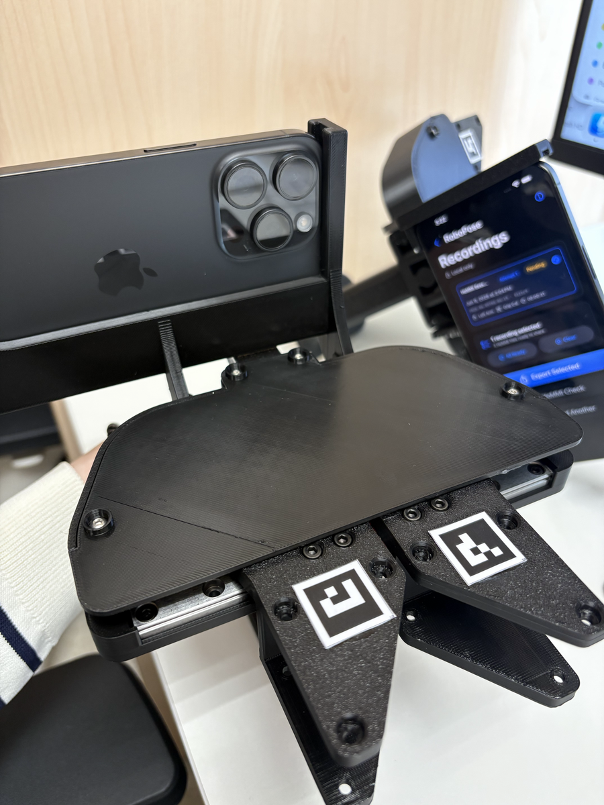
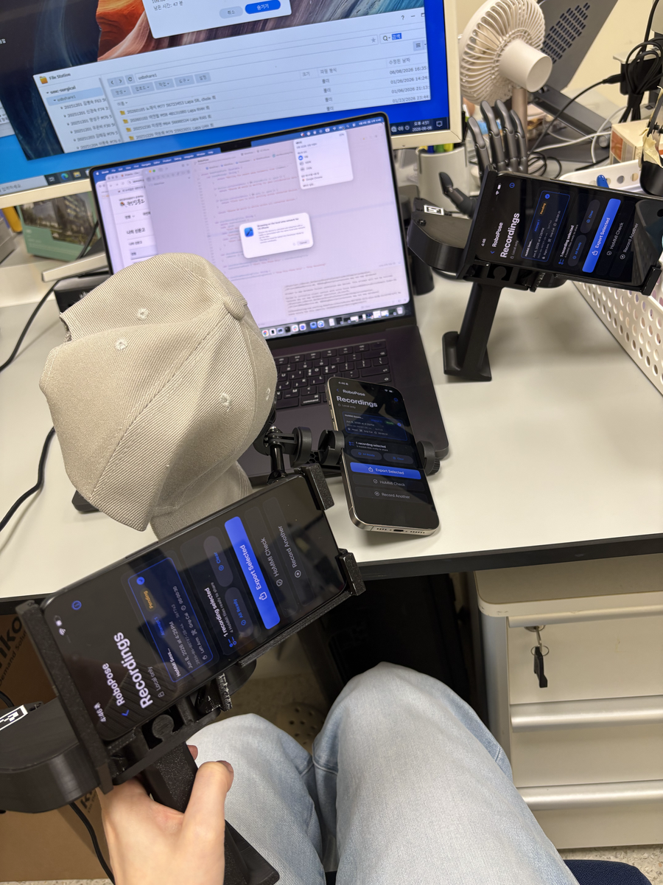
머리의 iPhone을 녹화 제어 기기(Master)로, 양손의 iPhone을 참여 기기(Slave)로 설정했습니다. Master에서 한 번의 녹화 단위인 세션을 만들고 시작·종료 시각을 예약하면, Slave가 같은 세션에 참여해 각자의 영상과 센서 데이터를 저장합니다. 기록에는 일반·초광각 영상, 깊이, ARKit 포즈와 진단 로그가 포함됩니다.
- 기록 장치
- iPhone 3대
- 녹화 구분
- 보정 + 시연
- 6월 9일 결과
- 1 episode
동기화 설계
시계 보정과 공간 공유, 녹화 예약
기기 사이의 시계 차이를 추정하고, ARKit 협업 데이터를 교환합니다. 시작·종료는 미리 정한 시각으로 예약하고, 녹화 후 파일을 공통 시간 구간에 맞춰 정렬합니다.
- 01기기 연결세션 생성 · 참여 기기 검색세션 참여 · Head / Left / Right 식별
- 02시간·공간 기준왕복 시간과 시계 차이 추정상대 기기와의 offset 저장
연결 중 병행: 협업 데이터 교환 → 각 ARSession에 반영
- 03시작 예약현재 시각 + 2초로 시작 예약예약 시각을 로컬 시계 기준으로 변환
- 04기기별 기록영상 · 깊이 · 포즈를 로컬 저장영상 · 깊이 · 포즈를 로컬 저장
센서별 타임스탬프와 기록 수를 함께 저장
- 05종료 예약종료 시각 전송 · 반복 전송로컬 종료 시각으로 변환 후 파일 마무리
- EXPORT타임스탬프 보정
Slave의 기록 시각에 측정한 Master clock offset을 더합니다.
- GROUP세 기기의 파일 연결
공통 세션·파일 식별자로 Head·Left·Right 기록을 묶습니다.
- ALIGN겹치는 시간 구간 정렬
HoMMI에서 공통 샘플 시각을 만들고 각 기기의 포즈를 보간합니다.
시계 보정식과 구현 기준
- 시계 차이 추정
- t₀: ping 전송 · t₁: 상대 수신 · t₂: pong 응답 · t₃: 로컬 수신
offset = ((t₁ − t₀) + (t₂ − t₃)) / 2RTT = max(0, (t₃ − t₀) − (t₂ − t₁)) - 예약 시각 변환
로컬 예약 시각 = 수신한 Master 시각 − offset상대 시계가 앞선 만큼 로컬 예약 시각에서 뺍니다.- 파일 내보내기
- 연결된 Master의 offset이 있으면 Slave의 영상·깊이·포즈 타임스탬프에 적용합니다. 해당 값이 없으면 기록 시각을 그대로 사용합니다.
- 공간 공유 상태
- World 표시는 ARKit 협업 데이터의 수신 여부로 갱신합니다. Master는 녹화 조율 역할이며 공간 좌표의 원점은 아닙니다.
2026.06.09 · 실제 앱 화면
보정 선택부터 내보내기까지
그리퍼 보정을 먼저 녹화하고, 작업 시연에서 사용할 보정 기록을 선택합니다. 세 기기를 연결해 준비 상태를 확인한 뒤 녹화를 시작합니다.
역할과 녹화 종류 선택
Master·Slave, Head·Left·Right를 지정합니다. 보정 녹화 후 Demonstration으로 전환하고 저장한 보정 run을 연결합니다.
세션 이름은 세 기기의 파일을 하나의 녹화로 묶는 기준입니다.
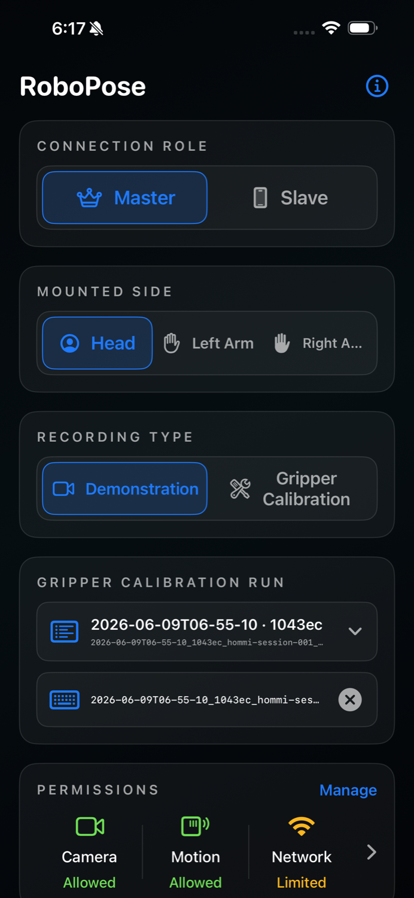
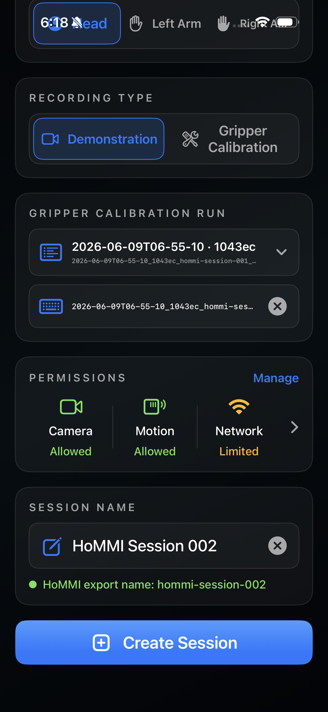
연결과 센서 상태 확인
참여 기기 수와 영상·포즈 기록 수를 한 화면에서 확인합니다. 기기별 Tracking·Sync·World 배지로 추적 상태, 시계 동기화, 공유 좌표 상태를 구분합니다.
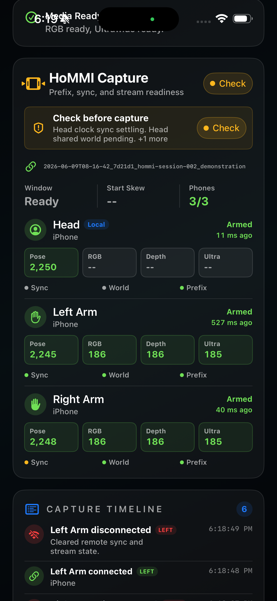
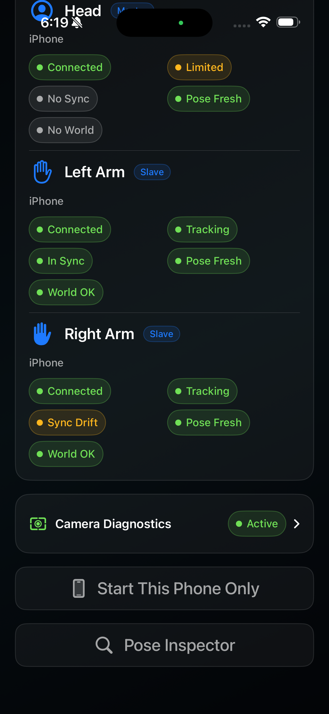
시작·종료 예약과 녹화
Master에서 시작·종료 시각을 예약하고 각 기기가 로컬 데이터를 기록합니다. 화면에는 센서별 카운터와 연결 상태를 표시합니다.
Capture Timeline에는 첫 영상·깊이·포즈 도착과 연결 변화를 남겨, 녹화 중 문제가 생긴 시점을 확인하도록 했습니다.
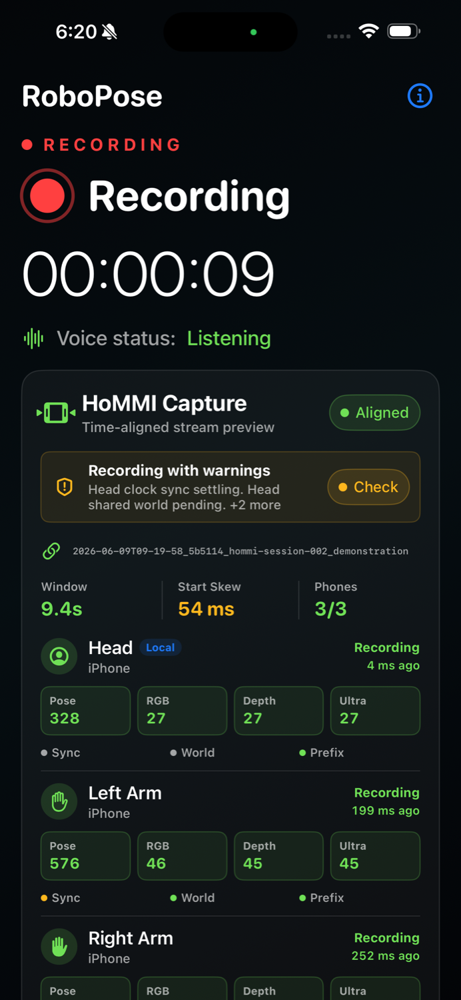
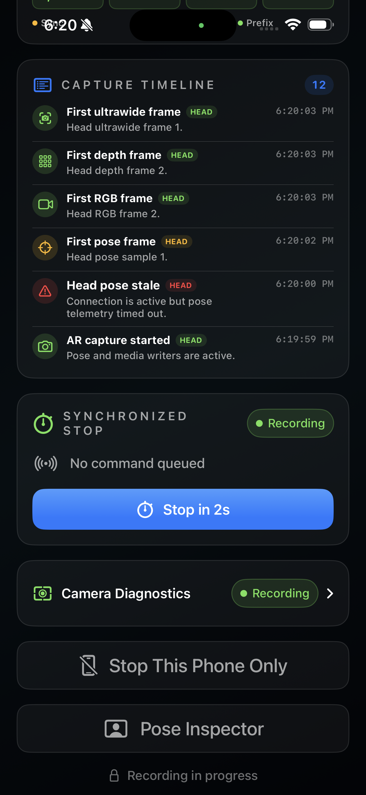
완료한 기록 내보내기
Ready 상태의 녹화를 선택해 Export Selected로 내보냅니다. 영상·깊이·포즈·메타데이터를 묶고 iOS 공유 시트에서 AirDrop이나 파일 저장을 선택합니다.
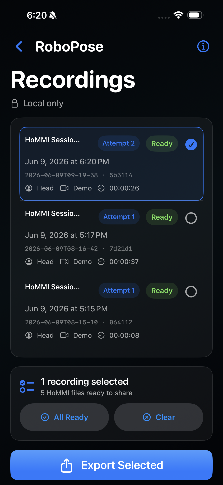
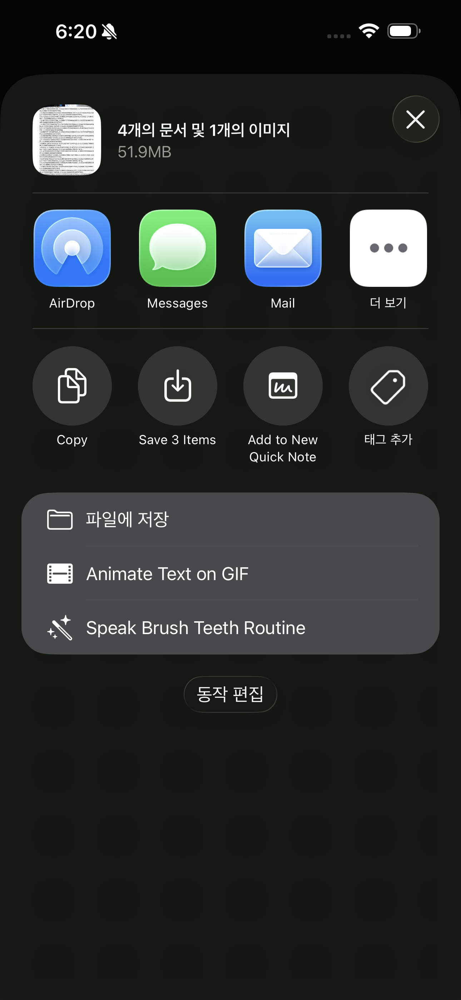
2026.06.09 · 보정과 데이터 변환
그리퍼 보정 기록을 시연에 연결
보정 녹화에서는 그리퍼의 태그가 보이도록 초광각 영상을 기록했습니다. 시연 파일에 사용할 보정 기록의 이름을 담아, 서로 다른 세션 이름의 보정·시연 파일을 함께 처리했습니다.
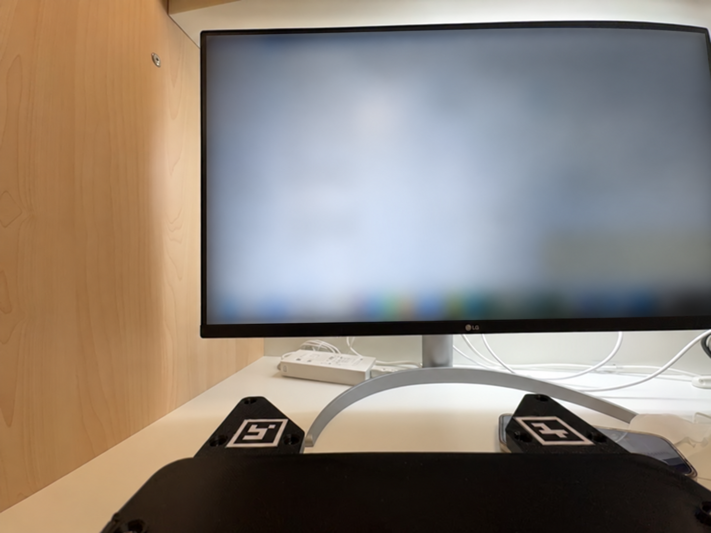
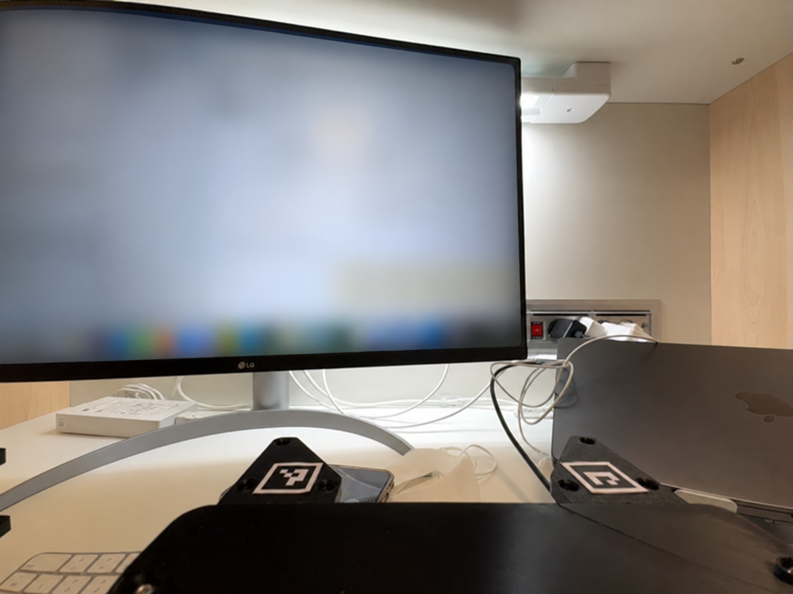
| 그리퍼 | 태그 ID | 두 태그를 함께 검출한 프레임 |
|---|---|---|
| Left | 6 / 7 | 57 / 141 |
| Right | 0 / 1 | 70 / 132 |
처음에는 Head의 보정 파일도 그리퍼 검출 단계에 들어갔습니다. 검출·보정 대상을 Left·Right로 제한한 뒤, 원본 파일 구성 그대로 전체 변환을 완료했습니다.
- 파일 묶기보정 1회 + 시연 1회 연결
- 태그 검출·보정좌우 그리퍼 폭 범위 산출
- 시각·포즈 정렬세 시점의 기록을 공통 프레임에 정렬
- Replay buffer 생성영상·3차원 좌표·위치·자세·그리퍼 폭 저장
앱의 내보내기 형식을 기존 HoMMI 처리 파이프라인에 연결했습니다.
2026.06.09 · 변환 결과
시연 1회 · 정렬된 데이터 2,245프레임
보정 녹화와 시연 녹화 한 쌍을 변환해, 세 기기의 영상과 움직임을 같은 시점으로 묶은 데이터 파일을 만들었습니다. 결과는 1 episode, 2,245개 정렬 프레임의 Zarr replay buffer입니다. 파일을 다시 읽어 영상·깊이·위치·자세와 좌우 그리퍼 폭을 확인했습니다.
| 기기 | Pose | RGB / Depth | 초광각 |
|---|---|---|---|
| Head | 2,250 | 183 / 183 | 184 |
| Left | 2,245 | 186 / 186 | 185 |
| Right | 2,248 | 186 / 186 | 185 |
정렬 후 데이터 확인
| 항목 | 결과 |
|---|---|
| Episode / 정렬 프레임 | 1개 / 2,245 |
| 일반·초광각 영상 | Head 512×512 · Left/Right 224×224 |
| 깊이·포즈 | Head의 픽셀별 3차원 좌표(pointmap) · 좌우 위치/회전 채널 |
| Head pointmap | 0이 아닌 값 비율 75.0% |
| Left 그리퍼 폭 | 0–0.047m · 1,651 / 2,245프레임이 0이 아닌 값 |
| Right 그리퍼 폭 | 0–0.046m · 1,633 / 2,245프레임이 0이 아닌 값 |
| 그리퍼 폭의 수치 유효성 | 좌우 모두 NaN 없음 |
| 작업 라벨 | task_names=[] · 미입력 |
2,245는 정렬 후 데이터 프레임 수입니다. 원본 영상의 촬영 프레임 수와는 다릅니다.
검증 표와 데이터 구조 · PDF 9–12쪽 ↗2026.06 · 개발 마일스톤
3기기 녹화에서 데이터 변환과 안정화까지
- 세 기기의 녹화·내보내기 연결
영상·깊이·포즈를 저장하고 HoMMI 입력 형식으로 내보내기.
- 실제 녹화로 전체 변환 완료
보정과 시연 한 쌍에서 1 episode·2,245프레임 생성.
- 다음 시연에서도 보정 기록 재사용
저장한 보정 선택과 녹화 전 파일 저장 준비.
- 녹화 중 멈춤과 프레임 누락 개선
데이터 저장과 화면 갱신을 분리한 뒤 30초 녹화 비교.
녹화 시작 전에 파일 저장 준비
RGB·깊이·초광각 영상의 저장 작업을 나누고, 녹화 시작 전에 미디어 writer를 준비했습니다. 그리퍼 보정은 초광각 입력과 저장 준비가 갖춰진 뒤 시작하도록 했습니다. 완료한 보정 기록을 저장해 다음 시연에서 다시 선택하는 흐름도 추가했습니다.
Slave의 멈춤을 진단 로그로 추적
6월 12일에는 Slave에서 녹화 중 화면이 멈추고 프레임이 누락되는 문제를 점검했습니다. 진단 로그에서 화면 처리를 맡는 MainActor의 지연이 2초 → 7초 → 13초로 늘어나는 구간을 찾았습니다.
카메라 준비 시점을 늦추는 시도는 멈추는 시점만 바꿨고, 준비를 없애면 센서 상태를 표시할 수 없었습니다. ARSession 제어까지 다른 실행 흐름으로 옮긴 시도에서는 통신 오류와 정지가 발생해 되돌렸습니다.
최종적으로 매 프레임의 데이터 기록은 유지하고 화면 갱신 빈도만 줄였습니다. 포즈 UI는 초당 30회에서 2회로, 공유 좌표 상태 표시는 초당 5회에서 0.5회로 조정했습니다. 협업 데이터 전달과 진단 로그 작업도 화면 갱신 경로에서 분리했습니다.
| 기록 항목 | 수정 전 | 수정 후 | 같은 비교의 Master |
|---|---|---|---|
| Pose | 609 | 1,805 | 1,802 |
| RGB | 50 | 151 | 151 |
| Depth | 52 | 151 | 150 |
수정 전후로 30초씩 녹화해 비교했습니다. 수정 후에는 Left의 기록 수가 Master와 비슷해졌고, 이 비교에서는 MainActor 지연과 Master 연결 끊김이 발생하지 않았습니다.
녹화 시작 시 카메라를 다시 준비하는 짧은 멈춤은 남아 있어, 장시간·반복 녹화를 다음 점검 항목으로 정했습니다.
시연 영상 · 원문 보고서
실제 장착과 앱 동작


기록 출처
- 2026.06.09 · E2E 보고서 — 앱·장착 화면 2–8쪽, 변환 결과 9–12쪽, 영상 13쪽
- 2026.06.11 · RoboPose 인수인계 — 캡처·보정 선택·저장 준비 구현
- 2026.06.12 · 개발일지 — 녹화 중 멈춤, 수정 시도와 30초 비교
- 동기화 구현 — Multipeer·Clock Sync·Shared World 설계, 예약 명령·시간 보정 코드, HoMMI align 처리